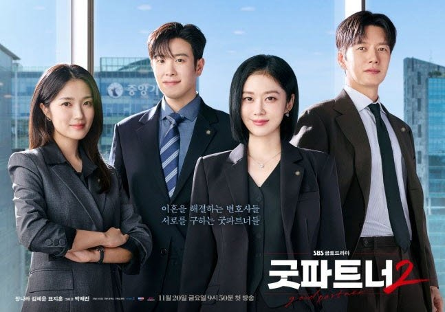
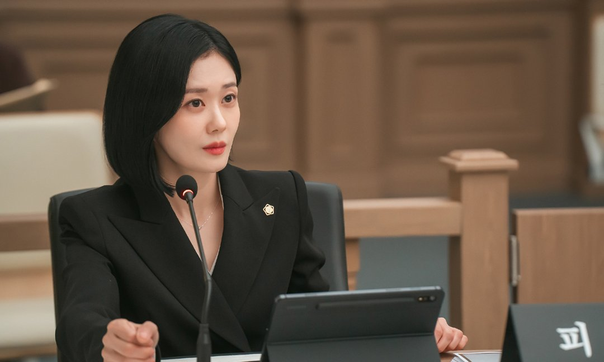
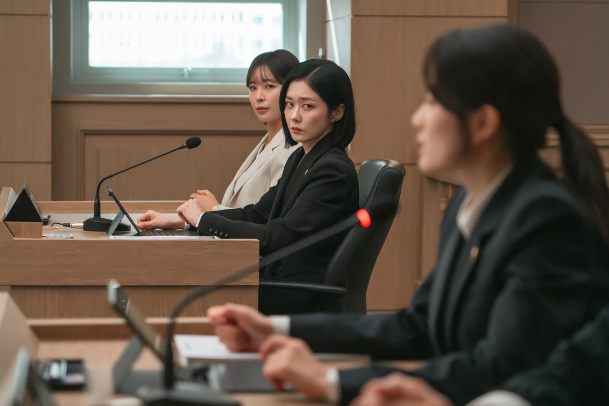
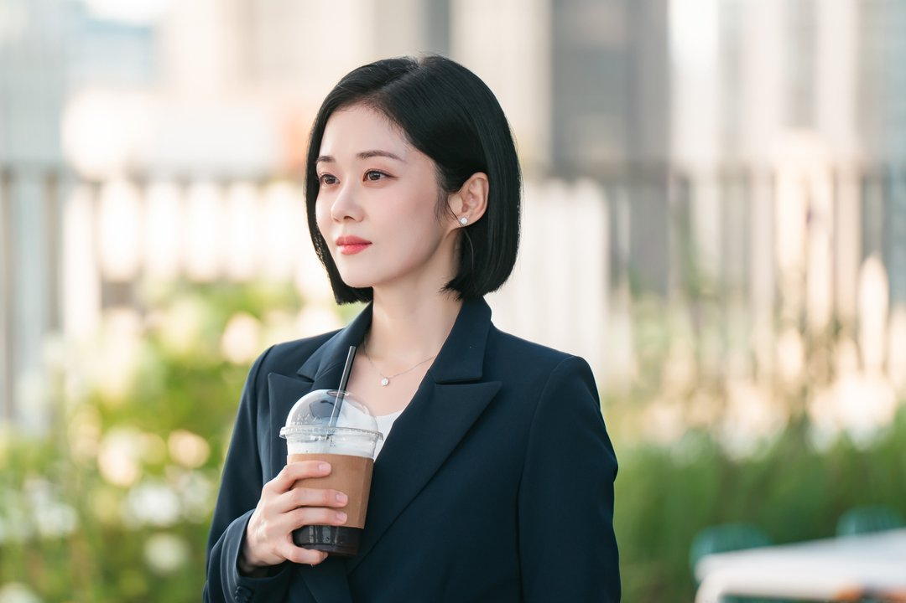
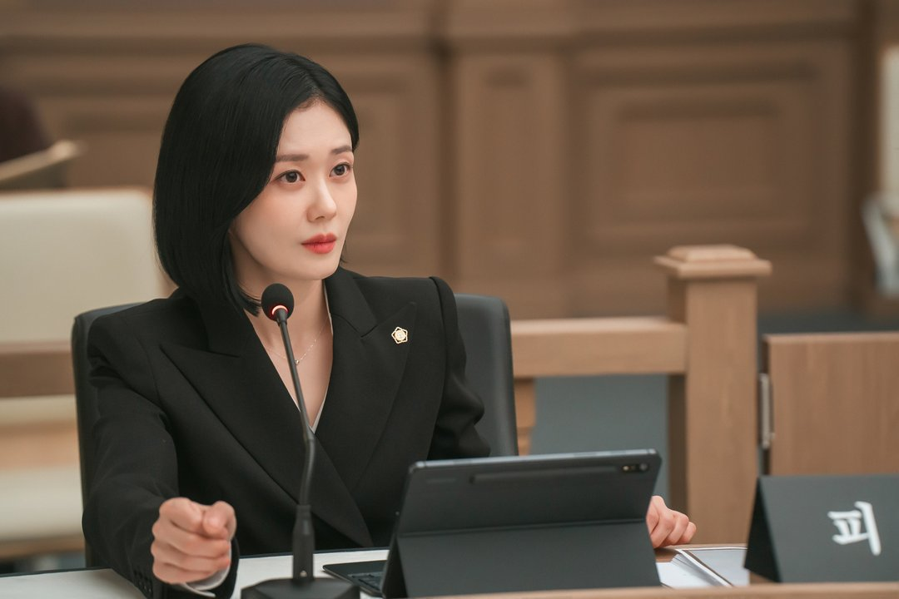

"승소 판결 받으면, 박나연 씨 인생도 승소하는 것 맞나요?" 차은경이 돌아왔어요. 11월 20일 첫 방송한 SBS 금토드라마 '굿파트너2' 1회는 이혼 소송 한 건으로 두 변호사를 법정에서 맞붙게 했어요. 1회에서 무슨 일이 있었는지, 누가 어떤 역인지, 다음 방송은 언제인지 차례로 볼게요.
📷 사진 1 자리
▲ SBS 금토드라마 '굿파트너2' 공식 포스터 · 사진=SBS 제공
1회 사건, 오픈 메리지 약정서
이혼 사건을 꿈꾸던 변호사 강혜성(김혜윤)에게 드디어 이혼 소송이 들어와요. 남편 서지훈(윤박)이 아내 박나연(고원희)의 외도를 이유로 낸 소송이었어요. 외도 증거가 넘쳐서 강혜성은 이길 거라고 확신했어요.
상대 변호사로 나온 사람이 차은경(장나라)이었어요. 차은경은 남편도 바람을 피웠고 아내에게 다른 사람과의 관계를 강요했다고 맞섰어요. 부부가 외도를 허용하기로 한 '오픈 메리지 약정서'까지 나오면서 재판은 복잡해졌어요.
📷 사진 2 자리
▲ 법정의 차은경(장나라) · 사진=SBS 제공
▶ 영상 1 자리
결론은 뜻밖이었어요. 차은경은 이혼에 합의하는 대신 재산분할을 받는 조정안을 냈고 남편이 이를 받아들였어요. 그 뒤에 진실이 드러나요. 박나연은 남편의 강요로 약정서에 서명했고 남편은 일부러 외도 증거를 모아 이혼 책임을 아내에게 떠넘기려 했던 거예요.
📷 사진 3 자리
▲ '굿파트너2' 1회 법정 장면 스틸 · 사진=SBS 제공
차은경이 강혜성을 고른 이유
차은경은 법무법인 리봄을 키우려고 함께할 파트너 변호사를 찾던 중이었어요. 그런데 점찍어 둔 건물도, 큰 의뢰인도 경쟁 로펌 '법무법인 태수'에 뺏겼어요.
사건이 끝난 뒤 차은경의 머릿속에 남은 건 법정에서 맞섰던 강혜성이었어요. 의뢰인이 거짓말을 해도 끝까지 증거를 찾던 모습이요. 차은경은 "완전 이혼 재질이잖아. 찾았다"라며 웃었어요.
📷 사진 4 자리
▲ '굿파트너2' 차은경(장나라) 스틸 · 사진=SBS 제공
마지막 장면, 박태수 사무실에 있던 사람
1회 마지막에 차은경은 경쟁 변호사 박태수(박해진)를 만나러 법무법인 태수를 찾아가요. 그런데 사무실에서 마주친 사람은 전남편 김지상(지승현)이었어요. 이 재회 장면에서 1회가 끝났어요.
▶ 영상 2 자리
등장인물 정리
| 인물 | 배우 | 누구인가 |
|---|---|---|
| 차은경 | 장나라 | 법무법인 리봄 대표 변호사 |
| 강혜성 | 김혜윤 | 광진시 법무법인 춘정의 경력직 변호사 |
| 박태수 | 박해진 | 경쟁 로펌 법무법인 태수의 변호사 |
| 김지상 | 지승현 | 차은경의 전남편 |
| 김상춘 | 류승수 | 법무법인 춘정 대표 |
| 서지훈·박나연 | 윤박·고원희 | 1회 이혼 소송의 부부 |
극본은 시즌1과 같은 최유나 작가, 연출은 서민정 감독이에요.
시청률과 방송 시간
1회 시청률은 닐슨코리아 기준 전국 8.4%, 순간 최고 9.9%였어요. 2024년 방송한 시즌1은 전국 최고 17.7%까지 올랐어요.
📷 사진 5 자리
▲ '굿파트너2' 1회 스틸 · 사진=SBS 제공
'굿파트너2'는 매주 금요일과 토요일 오후 9시 50분 SBS에서 방송해요. 2회는 21일 토요일 같은 시간이에요.
▶ 영상 3 자리
짧은 리뷰
'굿파트너2'는 이혼 전문 대표 변호사 차은경과 이혼에 진심인 경력직 변호사 강혜성이 서로의 파트너가 되어 가는 법정 드라마예요.
1회는 승패보다 그 뒤를 묻는 쪽이었어요. 차은경은 이길 수 있는 재판에서 의뢰인에게 이 사람이 지킬 가치가 있는 남편인지를 먼저 물었어요.
시즌1을 봤다면 차은경과 김지상의 관계가 다시 엮이는 장면부터, 처음 본다면 매회 한 건씩 끝나는 이혼 사건 위주로 따라가도 충분해요.
1회만 보면 시즌2의 판은 두 갈래예요. 강혜성을 리봄으로 데려오려는 차은경, 그리고 같은 손님을 노리는 박태수와 그 사무실에 있던 김지상이에요. 2회 예고 제목도 '마음에 드는 변호사 찾았어'라서, 당분간은 강혜성이 어느 법무법인을 고르느냐가 이야기의 중심이 될 것 같아요.
'굿파트너2' 1회는 오픈 메리지 약정서 사건으로 차은경과 강혜성을 처음 맞붙였고 2회는 21일 토요일 오후 9시 50분 SBS에서 방송해요.




